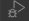

This codelab provides tutorials on how to install a development environment on your computer for developing a full stack application.
Open your favoriate browser and navigate to the NodeJs site. Choose the LTS version for your operating system and select the 64bit download package. Follow the instruction to download the package into your directory of choice or your default download directory.
Once the NodeJS package has been downloaded, double click on the installation package to install it. Follow the on screen instructions to install Nodejs. Using the default installation settings is recommended.
To verify Node installation, at the terminal or command prompt, type the following:
node --version
v10.15.3
The node version should match the version that you have downloaded.
Open your favorite browser and navigate to the Visual Studio Code download site. Choose the installation package for your operating system and download the installation package. Follow the download instruction and download the package into your directory of choice or your default download directory.
Once the Visual Studio Code installation package has been downloaded, double click on the installation package to install it. Follow the on screen installation instructions to install Visual Studio Code. Using the default installation settings is recommended.
Visual Studio Code provides many valuable extensions. These extensions help to increase your development productivity by providing all essential software development tools. The following extensions are recommended for Angular NodeJS Full Stack development.
Open a command prompt or terminal on your computer. Inside the command prompt window, type the following command.
npm install -g @angular/cli
After Angular CLI has successfully installed, at the command prompt or terminal, type ng –version to verify the version installed.
ng --version
_ _ ____ _ ___
/ \ _ __ __ _ _ _| | __ _ _ __ / ___| | |_ _|
/ △ \ | '_ \ / _` | | | | |/ _` | '__| | | | | | |
/ ___ \| | | | (_| | |_| | | (_| | | | |___| |___ | |
/_/ \_\_| |_|\__, |\__,_|_|\__,_|_| \____|_____|___|
|___/
Angular CLI: 9.1.7
Node: 10.15.3
OS: darwin x64
Angular:
...
Ivy Workspace:
Package Version
------------------------------------------------------
@angular-devkit/architect 0.901.7
@angular-devkit/core 9.1.7
@angular-devkit/schematics 9.1.7
@schematics/angular 9.1.7
@schematics/update 0.901.7
rxjs 6.5.4
Open a command prompt or terminal on your computer. Inside the command prompt window, create a apps folder and change directory to this folder. You can choose the name of this folder. After changing to your newly created folder, type the following command.
ng new helloworld
? Would you like to add Angular routing? (y/N)
CSS
SCSS [ https://sass-lang.com/documentation/syntax#scss ]
Sass [ https://sass-lang.com/documentation/syntax#the-indented-syntax ]
Less [ http://lesscss.org ]
Stylus [ http://stylus-lang.com ]
The ng new command prompt you to make several choices. Select y to add Angular routing, and select less for CSS. Less stands for Lean Style Sheet. This topic will be covered in another codelab. Use the up and down arrow key to make your selection. You will see the following output from the ng new command.
? Would you like to add Angular routing? Yes
? Which stylesheet format would you like to use? Less [ http://lesscss.org ]
CREATE helloworld/README.md (1027 bytes)
CREATE helloworld/.editorconfig (246 bytes)
CREATE helloworld/.gitignore (631 bytes)
CREATE helloworld/angular.json (3687 bytes)
CREATE helloworld/package.json (1287 bytes)
CREATE helloworld/tsconfig.json (543 bytes)
CREATE helloworld/tslint.json (1953 bytes)
CREATE helloworld/browserslist (429 bytes)
CREATE helloworld/karma.conf.js (1022 bytes)
CREATE helloworld/tsconfig.app.json (210 bytes)
CREATE helloworld/tsconfig.spec.json (270 bytes)
CREATE helloworld/src/favicon.ico (948 bytes)
CREATE helloworld/src/index.html (296 bytes)
CREATE helloworld/src/main.ts (372 bytes)
CREATE helloworld/src/polyfills.ts (2838 bytes)
CREATE helloworld/src/styles.less (80 bytes)
CREATE helloworld/src/test.ts (753 bytes)
CREATE helloworld/src/assets/.gitkeep (0 bytes)
CREATE helloworld/src/environments/environment.prod.ts (51 bytes)
CREATE helloworld/src/environments/environment.ts (662 bytes)
CREATE helloworld/src/app/app-routing.module.ts (246 bytes)
CREATE helloworld/src/app/app.module.ts (393 bytes)
CREATE helloworld/src/app/app.component.less (0 bytes)
CREATE helloworld/src/app/app.component.html (25705 bytes)
CREATE helloworld/src/app/app.component.spec.ts (1071 bytes)
CREATE helloworld/src/app/app.component.ts (215 bytes)
CREATE helloworld/e2e/protractor.conf.js (808 bytes)
CREATE helloworld/e2e/tsconfig.json (214 bytes)
CREATE helloworld/e2e/src/app.e2e-spec.ts (643 bytes)
After the application is created, type the following command to run your application.
ng serve
Note the URL from the ng serve command output. Open a browser and navigate to this URL. You will see your application is running on your computer in the browser.
Open Visual Studio Code (VS Code) and open the folder containing your application. You can open your project at the root folder of your application in the command window by typing code . (period).
Once the folder is opened in Visual Studio Code, open the a source file. Click the Debugger Icon  in VS Code. Click the settings toolbar button to open the launch.json file in the editor. The settings should look like below.
{
// Use IntelliSense to learn about possible attributes.
// Hover to view descriptions of existing attributes.
// For more information, visit: https://go.microsoft.com/fwlink/?linkid=830387
"version": "0.2.0",
"configurations": [
{
"type": "chrome",
"request": "launch",
"name": "Launch Chrome against localhost",
"url": "http://localhost:4200",
"webRoot": "${workspaceFolder}",
"runtimeArgs": [
],
},
{
"type": "chrome",
"request": "attach",
"name": "Attach to Chrome",
"port": 9222,
"webRoot": "${workspaceFolder}"
}
]
}
There are two launch settings in the above. The first setting is to launch the Google Chrome browser and attach to the running browser session. The second setting is to attach to an already running browser session.
Once VS Code is attached to the running browser session, debugging breakpoints can be set. Please read the VS Code Debugging documentation.